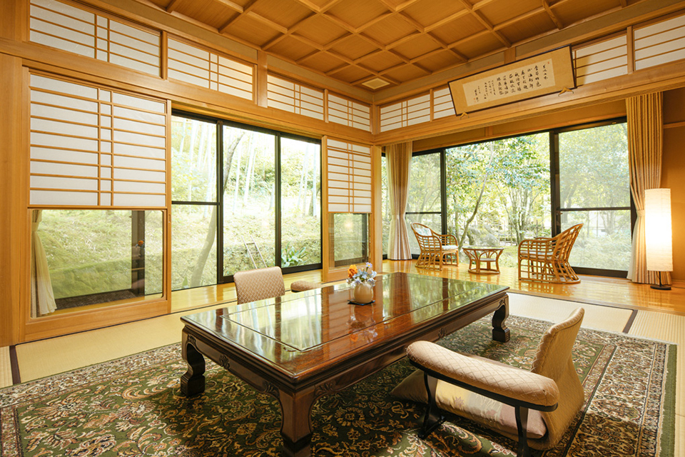
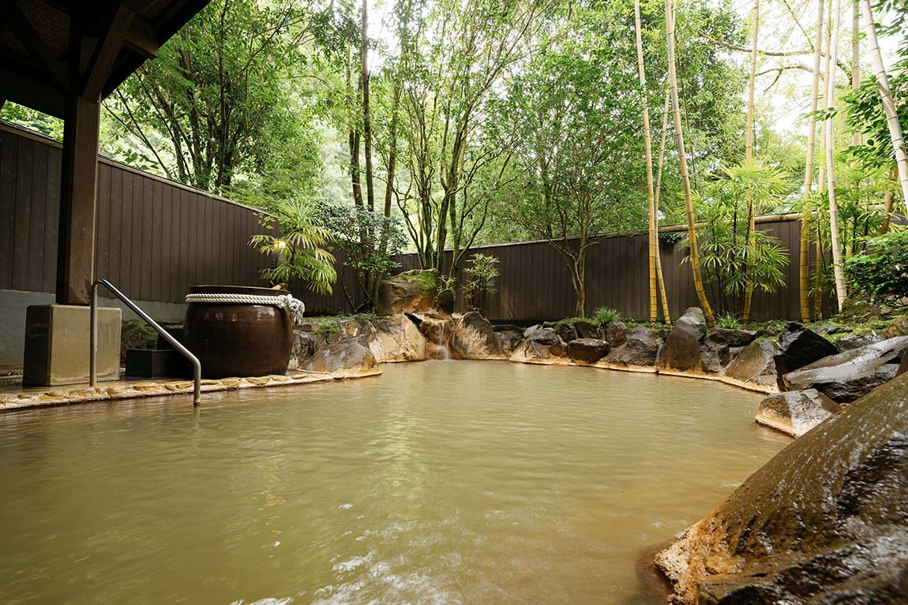
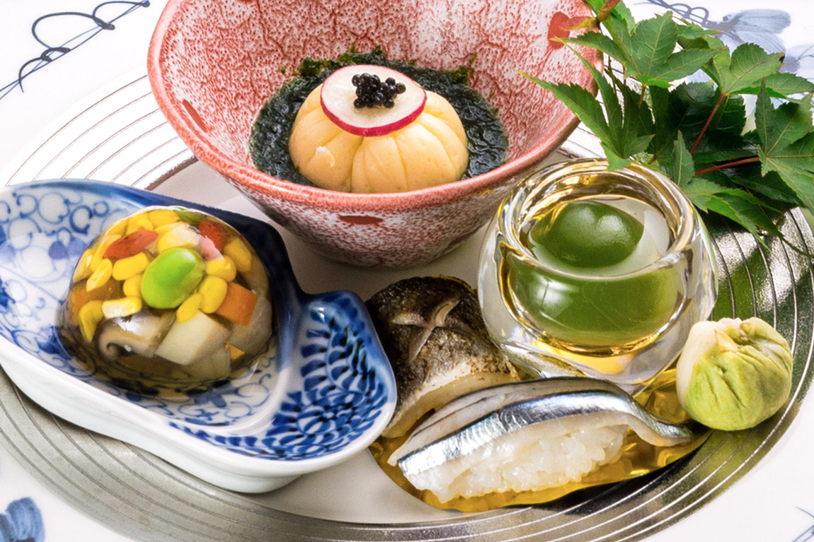

～全室客室露天風呂付き！食も温泉も部屋もすべて叶える～
妙見温泉 おりはし旅館 (鹿児島)
旅館おりはしはちょっと贅沢をしたい時に、その願いを叶えてくれる。
広大な土地には全室客室露天風呂がついた離れがあり、
時を忘れゆったりくつろぐ時間を提供してくれる。
温泉は炭酸水素塩温泉で土色に濁っている。
自噴している温泉、通称「キズ湯」については
忘れることなく入っておきたい。
食事は鹿児島の海の幸、山の幸を贅沢に使用。
月替わりの懐石についついお酒がすすんでしまう。
鹿児島空港からのアクセスは抜群に良し。
お値段はハイクラスだが、それ以上の価値をあなたへ。